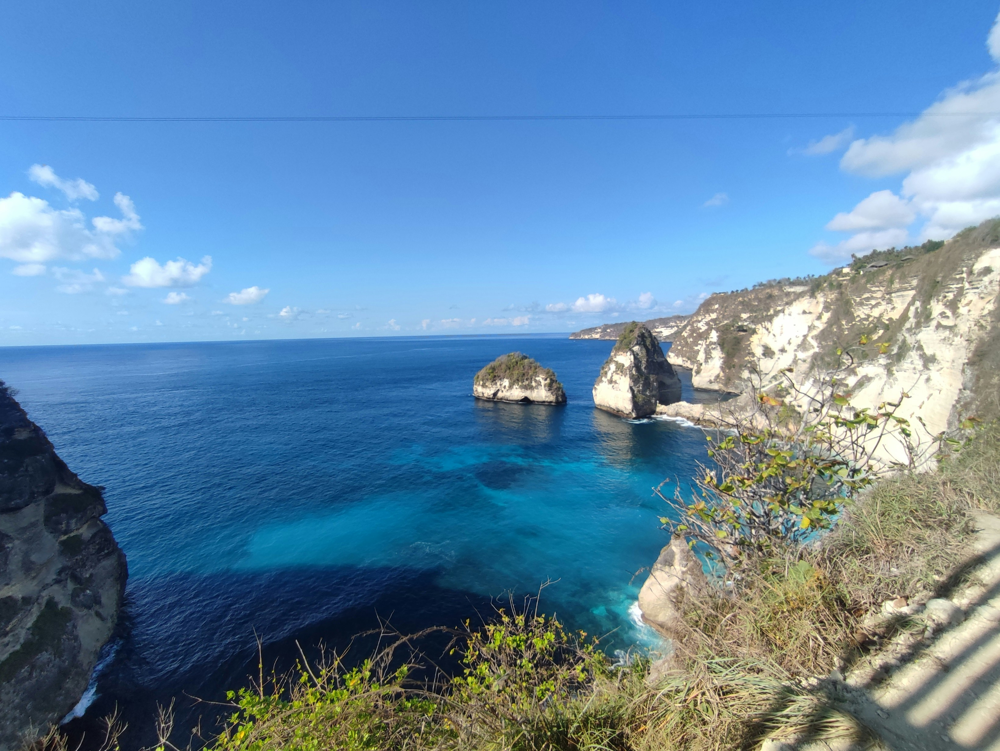
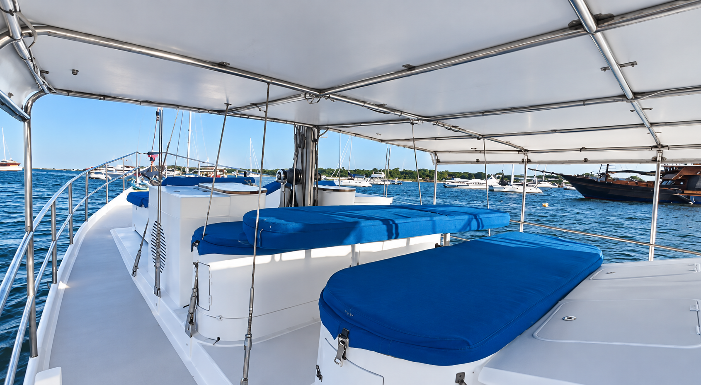
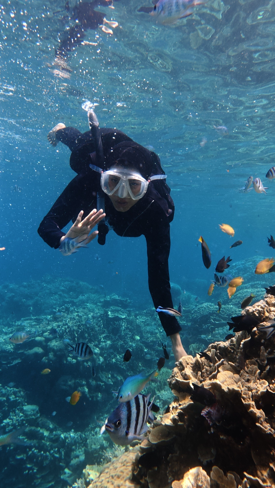
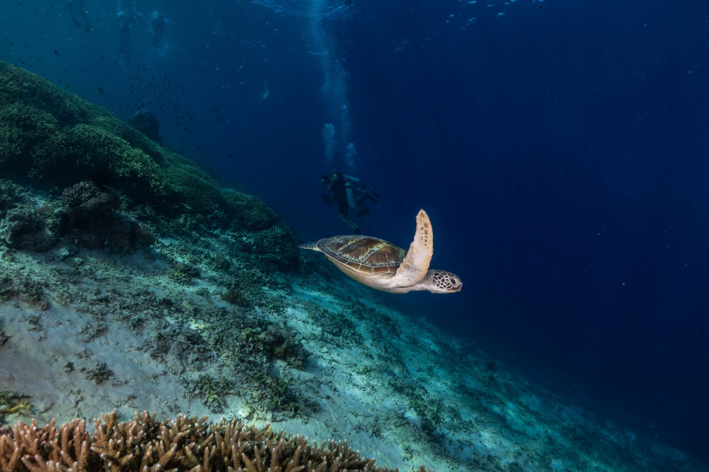
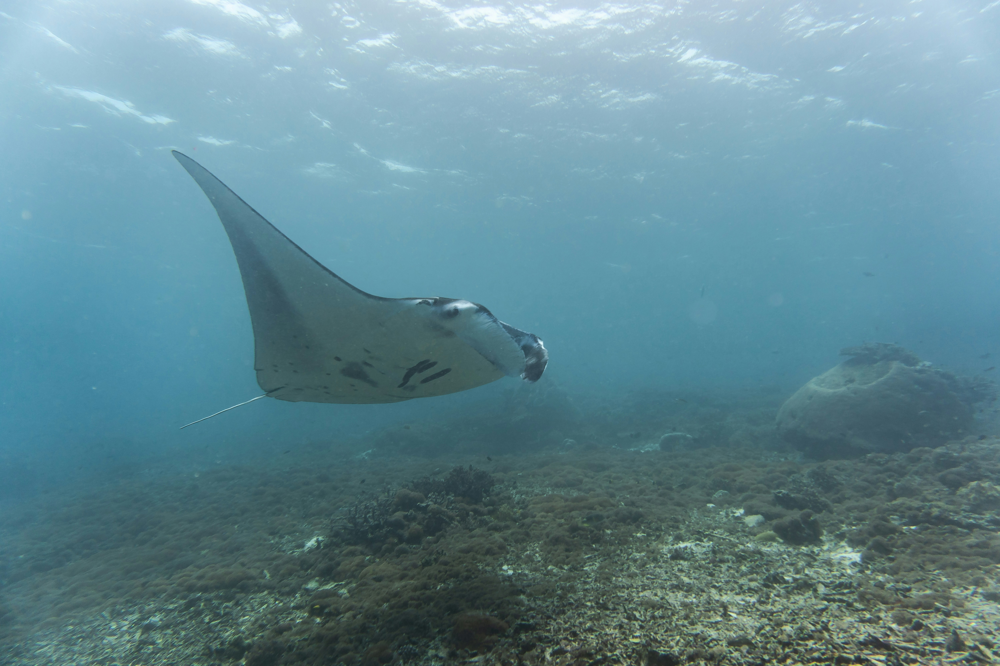
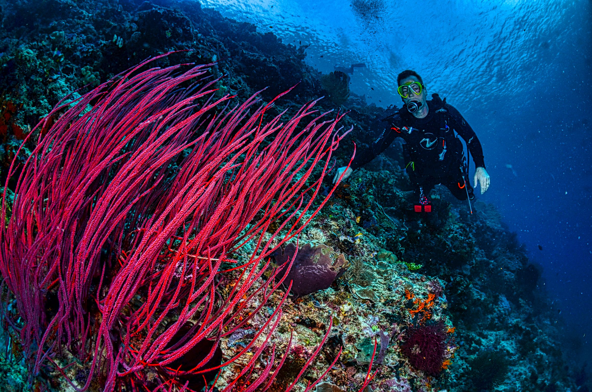
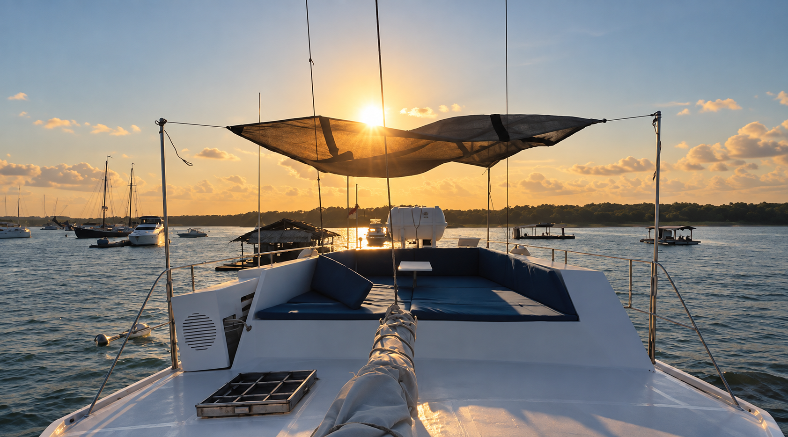

Swim
Drop in when the water looks right, cool off close to the boat or make a swim stop part of a longer day.

Wildlife · Snorkelling · Scuba
Use Gypsy Laut as your private base for swimming, snorkelling and marine encounters around Lembongan and Penida.
Scuba experiences can be arranged through selected premium local dive partners.
Lembongan Penida Indonesia

From Gypsy Laut
Begin aboard Gypsy Laut in Mushroom Bay rather than at a crowded tour counter.
Wake up aboard, decide what the water looks like and shape the day from there. Some days might mean swimming close to the boat. Others might take you by tender toward reefs, cliffs and quieter corners around the islands.
Gypsy Laut stays your base between each part of the day.
Gypsy Laut is the base. The tender gets you closer.
Below the Surface
The water around Lembongan and Penida changes with tide, weather, season and current. That is part of what makes it interesting.

Drop in when the water looks right, cool off close to the boat or make a swim stop part of a longer day.
Explore reefs and clear water when conditions suit, with the freedom to move on rather than stay tied to a fixed group itinerary.
Use the tenders to get closer to coastlines, quieter water and places the main vessel does not need to enter.

Wildlife
Manta encounters are possible around the Penida area, but they are never something we promise.
Conditions, timing and wildlife behaviour decide what happens on the day.
Sometimes the best experience is the one you did not plan for.

Scuba
Scuba experiences can be arranged through selected premium local dive partners.
Gypsy Laut remains your private base while specialist local professionals handle the diving side of the experience.
The plan can be discussed around conditions, timing and the kind of day you want to have.
Mola are seasonal and primarily relevant to scuba rather than snorkelling. As with all wildlife encounters, sightings cannot be guaranteed.

Your Day
You do not need to turn the day into a race between locations.
Swim. Snorkel. Spend time aboard. Go ashore. Move when conditions make sense.
If one place feels right, stay longer.
Back Aboard
Dry off, settle back onto the deck and let the boat become home again.
Lunch can happen aboard. The afternoon can slow down. Or you can head back out when the water calls.

Start a Conversation
Tell us what you have in mind and we’ll help shape a private day around the water, the conditions and the kind of experience you want.
Start a Conversation